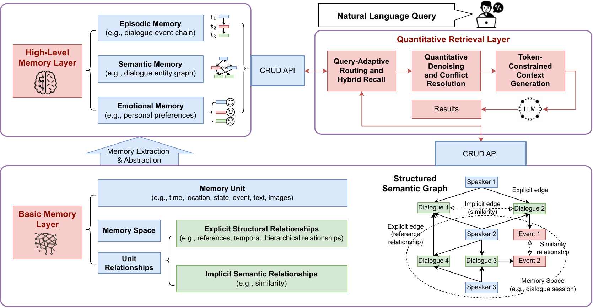
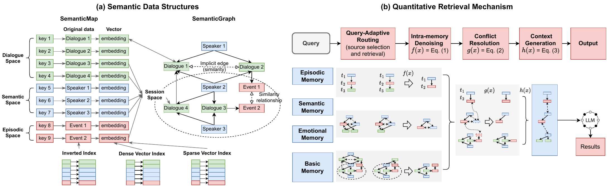
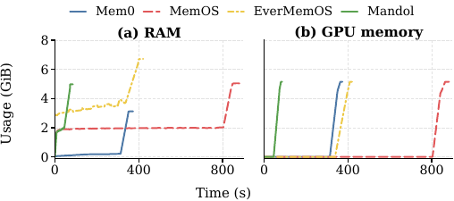

Mandol: An Agglomerative Agent Memory System for Long-Term Conversations
Mandol提出凝聚式记忆系统，统一碎片化记忆表示，减少延迟并提高检索效率。
机制速览
问题长期对话智能体需要记住和查询跨会话、多类型且具有复杂关联的信息。方法Mandol引入了一个层次化记忆模型，将记忆组织为基本层（原始信息）和高级抽象层（可追溯的抽象记忆），两者统一表示为结构化语义图。实验Mandol在两个长期对话基准上进行了评估：LoCoMo和LongMemEval。背景知识速读
基于 LLM 的对话代理在跨多天或多会话运行时，必须记住对话、用户偏好、事件和实体更新的复杂混合。要检索正确的一段过去信息来回答新的查询具有挑战性，因为相关记忆可能分散在许多轮次中，甚至可能与后续更新冲突。当前的记忆系统通常将不同类型的记忆存储在不同的数据库中——向量存储用于相似性搜索，图数据库用于关系——迫使检索过程在不同系统之间跳跃，并从嘈杂、冗余且可能过时的片段中组装视图，同时无法控制检索到的记忆消耗多少 token。
核心判断
Mandol 认为，通过构建一个单一的、内存中的聚集式数据结构，融合 key-value、vector 和 graph 能力，可以消除由独立数据库引起的碎片化。然后，它用定量流水线取代了自由形式的 RAG 检索，该流水线显式路由查询、过滤噪声、解决冲突，并将结果打包到 token 预算中，在检索过程中从不调用 LLM。
问题与动机
设想一个客户服务代理与用户交谈了数天。用户先预订了一家酒店，然后更改了预订，接着询问原始确认信息。标准检索系统可能会检索到旧的预订记录，因为它在文本上与查询相似，从许多轮次中引入冗余文本，并且未能注意到新预订覆盖了旧预订。然后，代理浪费 token 并给出过时的答案。根本问题在于，记忆系统没有统一的用户所知或所做内容的模型，并且缺乏确定性方法来解决冲突的证据。
方法与机制
Mandol 将记忆组织为两层。基本层存储原始对话轮次作为记忆单元，每个单元带有语义向量和元数据。单元通过显式结构边（时间顺序、引用）和隐式语义相似度边相连。在顶层，高级抽象层使用 LLM 创建情节链、语义实体图和情感偏好，所有这些都指向基本单元。物理上，它们存储在内存中的 SemanticMap（key-value + 稠密/稀疏/倒排索引）和 SemanticGraph（共享相同 ID 的邻接列表）中。当查询到来时，一个轻量级分类器决定哪些记忆源（基本、情节、语义、情感）相关，并分配每个源的候选预算。在每个源内，并行运行 BM25、SPLADE 和密集向量搜索，通过倒数排名融合（RRF）融合，并通过有限图扩展丰富以恢复多跳证据。一个交叉编码器对候选进行语义评分。检索输出随后通过一个基于中位数绝对偏差（MAD）的过滤器，该过滤器根据分数分布自适应调整，丢弃弱相关的项目。跨源时，冲突项目（相同实体、不一致的描述）通过平衡语义相关性、时间新鲜度（指数衰减）和源置信度（基本 > 情节 > 语义）的仲裁分数来解决。最后，保留的项目被组装成一个符合预定义 token 限制的上下文文本。在此检索链中不调用 LLM；LLM 仅根据清洗后的上下文生成最终答案。存储持久化通过异步分页后端到 DuckDB。
实验解读
Mandol 在两个标准的长对话基准 LoCoMo 和 LongMemEval 上进行了测试。准确率通过自动 LLM 评判器将生成的答案与真实答案进行比较来衡量。使用 GPT-4o-mini 作为回答模型，Mandol 在 LoCoMo 上达到 89.48%，在 LongMemEval 上达到 85.00%，均为 Mem0、MemU、Zep、MemOS 和 EverMemOS 中的最高值。在需要追踪助手提供的信息和更新知识的任务上，提升尤为明显——LongMemEval 的 SS-Asst 列从 19.60%（MemU）跃升至 98.21%（Mandol）。报告的 token 使用量（约 2k）处于比较系统的中等水平，表明定量检索成功地将所需证据打包到紧凑的上下文中。在服务器级 GPU 上的系统延迟实验显示，在 10 查询/秒并发负载下，检索速度是其他系统的 5.4 倍，插入速度是 4.8 倍。在消费级笔记本电脑上，Mandol 仍然适用并保持低延迟，尽管未给出具体数据。LoCoMo 基准的总处理时间为 86 秒，比任何其他系统快数倍，这是因为避免了外部数据库写入。
相关工作
该论文定义了其对几个开源代理记忆系统的贡献：Mem0（向量 DB，可选图）、Zep（带 Lucene 的时间知识图谱）、MemOS（向量+图，带摘要）和 EverMemOS（多数据库栈，带 Markdown 摘要）。所有这些系统都混合了存储引擎，并且在查询时需要跨系统协调。Mandol 是第一个提出单一内存数据结构，原生处理 key-value、vector 和 graph 操作而无需离开进程的工作。其他关于 Zettelkasten 网络和用于长上下文问答的天际线检索的工作被引用但未直接比较。
局限与未来工作
该论文集中于系统设计及其经验性能，但没有讨论固有的局限性。可以推断出几点。高层抽象步骤依赖于 LLM，其成本和失败模式未分析；错误的抽象可能会传播到所有后续查询。定量检索流水线有几个手动设置的超参数（用于 MAD 的 κ、新鲜度衰减、每个源的置信度权重），未在不同条件下进行验证。两个基准均为英文，因此跨语言行为未知。报告的加速是在 10 QPS 下测量的，属于中等水平，未测试数百个并发会话的可扩展性。最重要的是，没有消融研究分离出分层模型、聚集式数据结构或定量检索阶段的各自价值；读者无法判断提升来自于更好的检索、更好的去噪还是最终的 token 预算截断。
通俗例子
将 Mandol 想象成一个非常有条理的私人日记，它不仅记录了之前每一次对话的内容，还自动编写关键事实和关系的摘要，全部在一个带有彩色标签的笔记本里。当你问问题时，笔记本的索引快速找到相关页面，丢弃任何过时或离题的页面，通过信任最新和最直接的笔记来解决矛盾，然后为你提供一个整齐的摘要，刚好一页——无需计算机搜索。
读者 takeaway
Mandol 展示了可以将对话代理记忆的存储和检索统一到单个、快速的内存系统中，提供准确且 token 高效的上下文。该方法消除了传统栈的跨数据库 I/O 开销，并用结构化、定量的流水线取代了嘈杂的相似性搜索。这项工作指向了一个未来，代理记忆由原生管理，而不是由通用数据库拼凑而成。

针对本验证点的可视化上下文：Solution: Mandol 引入了一个层次化记忆模型，将记忆组织为基本层（原始信息）和高级抽象层（可追溯的抽象记忆），两者统一表示为结构化语义图。

针对本验证点的可视化上下文：Solution: Mandol 提供了一种凝聚式语义数据结构，结合 SemanticMap 和 SemanticGraph，原生融合了键值、向量和图结构，并提供统一的混合检索算子以消除跨数据库 I/O。

针对本验证点的可视化上下文：Experiment: Mandol 在 86.18 秒内完成了 LoCoMo 工作负载，在相同检索后端（Qwen3-Embedding-0.6B, bge-reranker-v2-m3）下比对比系统快 4.2–9.9 倍。
关键证据
- 问题：长期对话智能体需要记住和查询跨会话、多类型且具有复杂关联的信息。
- 问题：现有的智能体记忆系统依赖异构的向量和图数据库，这碎片化了记忆信息并导致跨数据库I/O延迟高。
- 问题：常见的RAG风格检索方法引入噪声、遗漏关联线索且缺乏token预算控制，降低了LLM的准确性和效率。
- 方法：Mandol引入了一个层次化记忆模型，将记忆组织为基本层（原始信息）和高级抽象层（可追溯的抽象记忆），两者统一表示为结构化语义图。
- 方法：Mandol提供了一种凝聚式语义数据结构，结合SemanticMap和SemanticGraph，原生融合了键值、向量和图结构，并提供统一的混合检索算子以消除跨数据库I/O。
- 方法：Mandol的定量查询机制具有查询自适应路由、定量去噪与冲突解决以及token约束上下文生成的特点，且在检索过程中无需LLM参与。
- 实验：Mandol在两个长期对话基准上进行了评估：LoCoMo和LongMemEval。
- 实验：评估使用了GPT-4o-mini和GPT-4.1-mini作为答案生成主干，以及来自EverMemOS的基于LLM的答案正确性脚本。